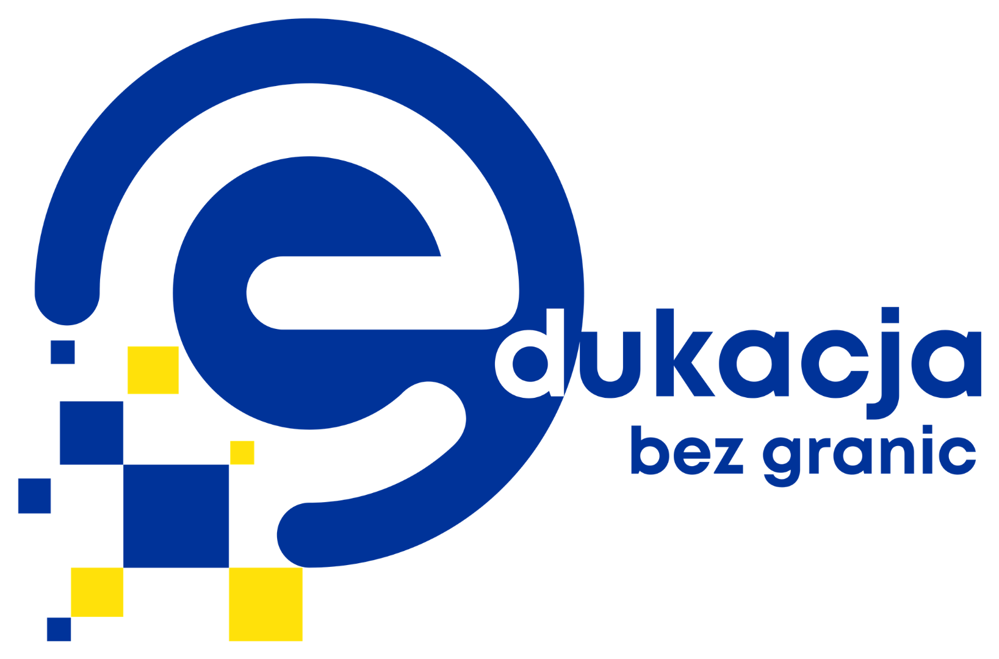

Edukacja bez granic Nowe kompetencje dla pracy doradczej i edukacji dorosłych
Projekt wspiera pracowników publicznych służb zatrudnienia w świecie cyfrowej zmiany, przeciążenia informacyjnego i nowych sposobów uczenia się dorosłych.
Poznaj projekt i wybierz interesujący Cię temat
Dowiedz się, dlaczego powstał projekt, jakie kompetencje rozwijają szkolenia oraz gdzie znaleźć aktualne informacje o zapisach.
Cel, kontekst, odbiorcy, mobilność Erasmus+ i znaczenie projektu dla pracy instytucji rynku pracy.
Przejdź do opisu Nowe tematy szkoleńTrzy tematy projektu opisane przez potrzeby uczestników, cele szkolenia i praktyczne rezultaty.
Poznaj trzy tematy Zapisy na szkoleniaDostępne nabory, terminy oraz bezpośrednie przejścia do formularzy zgłoszeniowych.
Sprawdź dostępne zapisy KontaktDane kontaktowe oraz informacje dla instytucji zainteresowanych organizacją szkolenia.
Skontaktuj się z namiTrzy obszary jednej zmiany
Każdy temat odpowiada na inną potrzebę pracy doradczej: porządkowanie informacji, budowanie relacji oraz tworzenie angażującego procesu uczenia się.

Informacja, relacja i doświadczenie
Myślenie krytyczne pomaga oddzielać fakty od manipulacji. Efektywna komunikacja pozwala lepiej rozumieć potrzeby klienta i prowadzić rozmowę w sytuacji zmiany. Uczenie przez gry i doświadczenie wspiera motywację dorosłych, którzy rozwijają nowe kompetencje.
Te trzy obszary nie konkurują ze sobą. Razem tworzą zestaw kompetencji potrzebnych osobom wspierającym klientów rynku pracy.
Sprawdź aktualne nabory
Formularze są udostępniane przy szkoleniach, dla których został uruchomiony nabór.